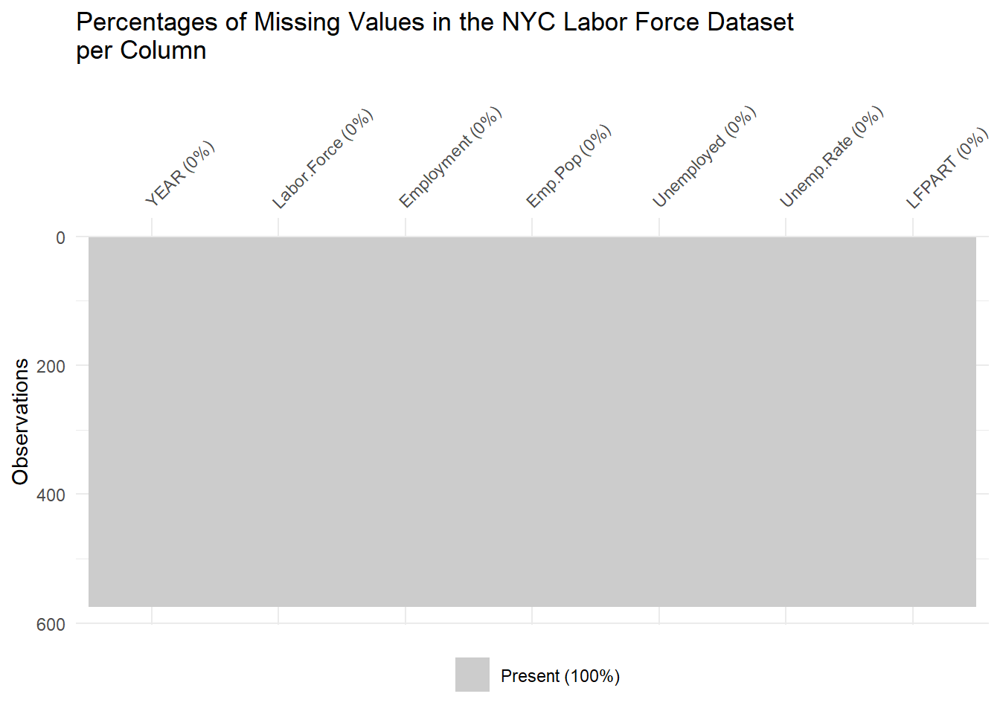
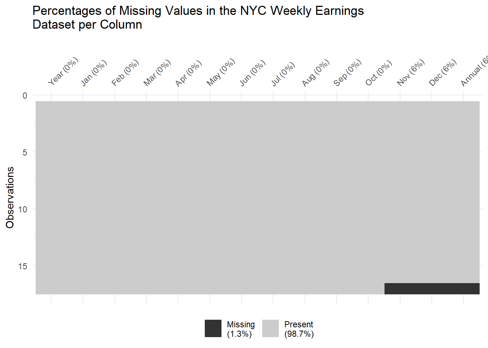
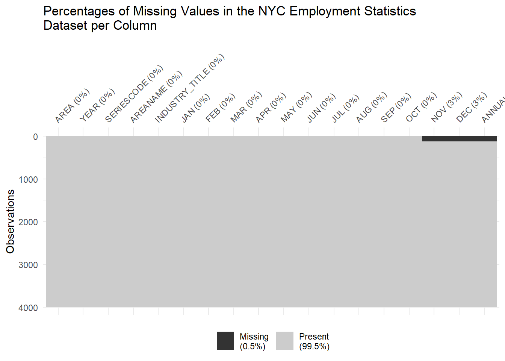

https://www.bls.gov/news.release/metro.t01.htm# (labor force and unemployment by state and metropolitan area)
https://www.bls.gov/ces/data/employment-situation-table-download.htm (Use to get US data)
https://data.bls.gov/PDQWeb/ln (Use to get U.S. labor force data)
This first data source we plan to use is the State and Area Employment, Hours, and Earnings taken directly from the New York State Department of Labor’s website. This data is collected by the federal government through the Current Employment Statistics Survey where data is collected each month from roughly 140,000 different businesses and government agencies to find employment, hours, and earnings. This is then taken by the state government and filtered to the proper state and city, in this case, the New York State Department of Labor only included data points from New York City. The data is in the format of three excel spreadsheets, one contains the hourly earnings for each month from 2013 to 2023 and it is updated monthly, with November and December currently missing from 2023 in the chart. The dimensions of this data are 10 rows for the years with 12 columns for the months. Other relevant information in this data is it includes an annual average for each year and below the main data contains the percent changes from each month and the annual percent change. The next spreadsheet contains the average weekly hours worked in New York City where again the data is for each month from 2013 to 2023 and is updated monthly, with November and December missing in 2023. Therefor, it has the same dimensions and also includes similar extra information like the annual average and the percent changes below the main data. Lastly, this data contains a spreadsheet with the average weekly earnings of New York City employees. This is again in the same format as the previous data where it contains data from 2013 to 2023 for each month excluding the 2023 months that have not finished yet. It also includes the same additional information with the annual averages and the percent changes below. In order to import this data we will have to import each spreadsheet from the file separaetly. Along with this, we will likely have to clean the title section and remove the percent change sections as the empty spaces in between and the formatting would cause issues importing. If the percent change section is needed we will need to transform the data to add new columns otherwise it would influence the regular data.
The next data source we are using is the New York City Labor Force data taken directly from the New York State Department of Labor’s website. This data is collected by the state government through a few different sources including industry data, unemployment insurance claims, and the Current Population Survey. This survey is collected monthly along with the other data, allowing this labor force data to be updated monthly. When it comes to the format of the data the rows are the month and year, for example “Oct-23” is the last entry, and then there are columns for Labor Force (the number of people in the labor force), Employment (the number of people currently employed), Emp/Pop (The percent of the population that is employed), Unemployed (the number of people currently unemployed), Unemp Rate (The percent of people in the labor force that are unemployed), and the LFPART (stands for labor force participation, it is the percent of the population in the labor force). Since this includes historical data, the first row is from January 1976, giving the data 574 rows with the aforementioned 6 columns. This spreadsheet includes another unlabeled column which appears to be the change in unemployment rate. The spreadsheet also includes a few charts which we won’t be using. In order to import this data we will again have to remove some titles from the spreadsheet and add one for the change in unemployment rate column, then I believe this one will be quite simple to import to RStudio where we can play around and transform the data if needed. The only issue I see is the missing value on the first change in unemployment rate but this missing value could just be an NA or 0.
The next data source we are using is the New York City Employment Statistics data taken from the New York State Department of Labor’s website. This data is collected through the various surveys previously mentioned such as the Current Population Survey, the Current Employment Statistics, as well as industry data. This data is again updated every month. This is again updated monthly but has a very different layout. This data has columns for area, areacode, year, area name, industry title, and then one for each month. Due to the amount of different indsutries included this is a very long dataframe with 3,986 rows and the aforementioned 17 columns. The data includes the number of employees for each month for each sector, the change from year to year, and the percent change from year to year. In order to use this data way may need only use a certain amount of industries that we are interested in otherwise the data may be convoluted. This spreadsheet doesn’t have any title area or anything which will make it easy to load directly into RStudio with the only issue being some gaps in between columns and labeling which we can easily fix.
Lastly, since we will be comparing we will use this same data from the U.S. Bureau of Labor Statistics which collected the data found in these spreadsheets. For example there is a table with each states labor force and unemployment rate and their lare metropolitan areas for 2022 and 2023 for October and September which limits our timeframe. However, this data will be up to date as it is modified daily with the last edit being today 11/30/2023. Through the Current Employment Statistics database and the Current Population Survey database of the U.S. Bureau of Labor Statistics you can find the national data for all the previously described New York data, in the exact same format, with the exact same number of years (2013-2023) all updated each month. These will be easy to import and use in RStudio because they are .csv files and all cleaned to be downloaded and used. The only issue being that for the Employment Statistics data they are all separate spreadsheets for each industry but we will be able to transform the data to a comparable form.
2.1 Description
With our main questions being how do New York City labor statistics differ from the rest of the country? Does that make a compelling arguement to stay and work here? Or should we seek employment elsewhere? We can answer these questions by comparing the data we have collected above.
By first comparing the average New York City working hours to the national average we can get a better idea of whether here in the city we will be working more or less than around the country. This can give us an idea of how our work-life balance may be here compared to the rest of the country and if that is something you prioritize when seeking jobs, depending on the results, you may or may not wish to work here in New York City. We can also compare hourly wage to the national average to see if, for the difference in time worked, you are fairly compensated for your work. This will allow us to better understand if the earnings in New York City are worthwhile or whether it could be beneficially to relocate for better pay. Then with the weekly earnings this sort of provides a holistic picture of the past two examples where we get a better understanding of how much you can actually earn. This is because the hourly wage can be misleading if you work many extra hours whereas this weekly earnings, combined with the hours worked, gives an idea of how well you can expect to be compensated for how much you work. This also all happens to be time series data so we may be able to see trends in the data, for example if the average weekly earnings in New York City has steadily increased over the past years more so than the national average that may mean you could expect you wages to continue to grow more here than somewhere else. With that being said, it will be important to compare these sort of trends by looking into the percent changes over 6 months, 1 year, 3 years, and 5 years to get a better sense of possible short term and long term trends and expectations.
Next, the labor force data can give us insight into how easy or hard it may be to find a job. If the unemployment rate is higher here than elsewhere that could be a deterrent for a recent graduate who thinks they may have a better opportunity of securing a job elsewhere. Another way we can view this data is by again looking into the percent changes. For this data we would be more concerned about the short run changes so 3 months, 6 months, 9 months, 1 year, and 1 and a half years would likely be the scope of our percent changes. These changes can give us an idea if people are getting laid off. The idea being that if the unemployment rate changes but the labor force remains about the same, then that means the change isn’t attributed to people joining the labor force but not having a job, but rather people already in the labor force losing their job. This would mean either people are quiting or getting fired and both are not very good signs for new university grads. This can be compared with national data and if it is starkly different, it may be worthwhile to look elsewhere for work.
Lastly, the employment statistics will provide us a more in depth understanding of whether the indsutries we are interested to work in are hiring or not. This data is very similar to the labor force data however it just provides the total employed and is divided into each industry. This will allow us to see how big each industry is in New York City compared to the rest of the country, if it’s large here it may be best for you to stay, but if only a small fraction of employees for that industry work in New York City compared to the rest of the country it could be worthwhile to move. Then once you decide whether the indsutry you’re interested in has a large enough employee base in New York City, we can use this data to get an idea if these industries are hiring. By using percent change over some likely smaller time frames since we’re interested in more short run current hirings, we can see if the number of employees in a sector has been going up or down and compare this with the national average. The idea being, if the industry has no change or negative change they are laying off employees and it may be hard to work in the industry, but if there are positive changes then they’re hiring. Furthermore, if the percent change is drastically lower than the national average, you’re more likely to work in that industry elsewhere and should consider moving.
In the end, we can learn a lot by just comparing the different data to the national averages, but, due to the nature of this time series data, I believe we can learn the most from the trends in each data set. That is why much of our focus will be on the percent changes over certain pre-determined timeframes to give us a better understanding of how each statistic is changing over time.
2.2 Missing value analysis
Code
library(ggplot2)library(naniar)
Warning: package 'naniar' was built under R version 4.3.2
Code
# Reading the CSV file nyclfsa =read.csv("nyclfsa.csv")# Displaying a vis_miss plot of the missing values in our datasetvis_miss(nyclfsa) +ggtitle("Percentages of Missing Values in the NYC Labor Force Dataset per Column")

We notice that for this first dataset, there are no missing values.
Code
# Reading the CSV file nycwe =read.csv("nyc_weekly_earnings.csv", na.strings ="")# Displaying a vis_miss plot of the missing values in our datasetvis_miss(nycwe) +ggtitle("Percentages of Missing Values in the NYC Weekly Earnings Dataset per Column")

For the second weekly earnings dataset, we notice that we have missing values in the last observations row for the columns “Nov”, “Dec”, and “Annual”. This is due to the fact that the last row corresponds to the year 2023, and weekly earning figures haven’t been updated for the months of November and December. The same pattern persists in the 2 other sheets included in the file denoting weekly hours nad hourly earnings.
Code
# Reading the CSV file nychist =read.csv("nychist.csv", na.strings ="")# Displaying a vis_miss plot of the missing values in our datasetvis_miss(nychist) +ggtitle("Percentages of Missing Values in the NYC Employment Statistics Dataset per Column")

We notice a similar pattern in the NYC Employment statistics dataset. In this dataset, the years are listed in descending order with 2023 being at the top; therefore, it is only natural that figures for November and December 2023 are still haven’t being updated yet.